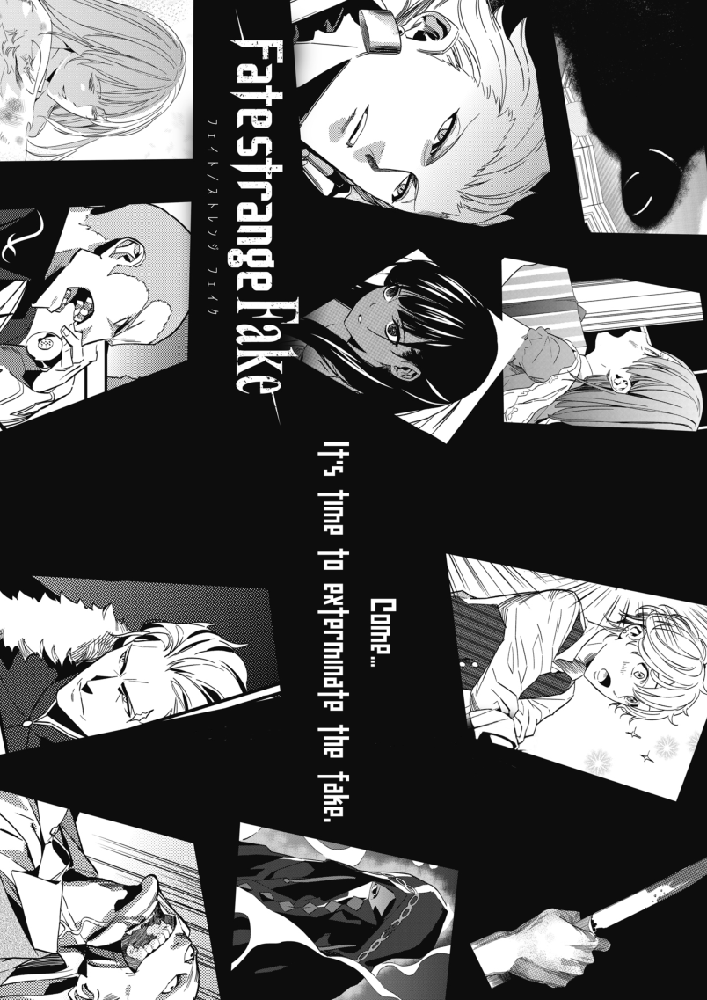

O espaço era um mundo completo. Negro como azeviche, pontilhado de luzes. No centro de uma sala dentro da ampla e perfeita esfera tingida com a cor do céu noturno, flutuava uma cadeira de madeira.
Pela aparência apenas, bastaria chamá-la de extravagante, mas a madeira lhe dava uma tonalidade refinada, e ninguém a tomaria por um adorno vulgar e repulsivo da elite. Pelo contrário, só por existir ali, ela impregnava o espaço ao redor com uma gravidade marcante.
Se uma pessoa sem refinamento se sentasse naquela cadeira, provavelmente seria consumida pelo peso da existência dela e acabaria oculta aos olhares ao redor. Tal era a importância daquela cadeira.
O espaço havia sido preparado com o único propósito de exibir a cadeira. Um homem exalando uma solenidade que superava a da própria cadeira se reclinava nela, arrancando um rangido alto da madeira.
"Hm..." Se alguém traçasse um mapa reduzido do universo com base naquela sala, o homem sentado na cadeira estaria em seu centro, emitindo uma aura certamente digna de seu senhor.
Sua aparência exterior provavelmente o colocaria na casa dos cinquenta ou sessenta anos. Era possível sentir as provações de sua vida nas rugas profundamente marcadas em seu rosto, mas seus olhos continuavam cheios de brilho, como os de alguém dez anos mais jovem.
"Este eixo está errado... estas linhas também serão aniquiladas..." Quando o homem deslizou o dedo pelo céu, os corpos celestes exibidos nas paredes ao redor começaram a girar.
"Ah, esse corte não serve... não, é o pior de todos. Aquela maldita aranha gigante vai despertar. É cedo demais, cem anos cedo demais, para enfrentar isso."
Então, como que em resposta às suas palavras, as páginas do livro flutuando diante dele começaram a virar com um farfalhar, registrando informações multifacetadas em tempo real.
A espessura do livro era mais ou menos a de uma enciclopédia comum. Ainda assim, conforme o homem guiava o dedo pelo ar, milhares, dezenas de milhares de páginas nasciam e eram apagadas.
Depois de repetir essa atividade vez após vez, o velho murmurou, como se estivesse entediado. "Como eu pensava, não importa como isso seja resolvido, o resultado não será satisfatório para a Associação. Dito isso, ainda não há motivo suficiente para minhas intervenções. Sim, é um im..."
"...passe completo."
O homem, que parecia falar sozinho, de repente pediu uma opinião ao espaço atrás de si.
"O que você acha? Já passou da hora de dar um oi. Aquele dispositivo de comunicação aí está funcionando perfeitamente."
Diante disso, o espaço respondeu: "Que grosseria a minha. Ao que parece, você percebeu." Havia uma pequena mesa de madeira de desenho semelhante ao da cadeira. Sobre ela repousava um telefone. Tinha a forma de um telefone muito antigo, do tipo que à primeira vista lembra um abajur de mesa. Mas, em vez de lâmpada, havia um alto-falante cônico. Preso a uma haste fina, via-se um microfone. Um disco giratório estava afixado à base do aparelho.
Era um telefone que só se encontraria em filmes, museus ou antiquários, com uma única diferença. Em vez do preto típico da maioria dos telefones antigos, aquele tinha um belo azul que evocava safira. À primeira vista, só se poderia pensar que fora feito de uma gema preciosa enorme.
Quanto à questão de havia quanto tempo o telefone estava ali, não deveria ter existido coisa alguma naquele espaço até poucos minutos antes. Ainda assim, o telefone estava tão perfeitamente integrado à harmonia do aposento que parecia sempre ter existido ali.
De fato, dirigir-se ao telefone havia confirmado o fato de sua existência, como se a história da sala tivesse sido reescrita.
"Com um pouco mais de tempo, eu pretendia fazer a campainha dele tocar." Uma voz de timbre jovem ressoou pelo alto-falante do telefone. Parecia como se o aparelho falasse por vontade própria. "Eu lhe pareço um velho que fala sozinho?" "Você perguntou isso porque sabia que era eu?" "Onde você acha que estamos? Posso contar nos dedos o número de pessoas que conseguem entrar aqui." Girando os ombros, o velho lançou um olhar ao telefone azul. "Então, o que o traz aqui? Se quer tomar chá, volte depois. Infelizmente, estou enrolado com um trabalho problemático."
"É, na verdade estou aqui justamente por causa disso." "O quê?" "Se vai escolher alguém para observar o incidente em Snowfield, não escolha entre os magos. Você deveria selecionar alguém do ponto de vista de um intruso."
Com isso, o disco do telefone começou a girar lentamente, voltando ao ponto inicial em certos intervalos antes de tornar a girar.
Ao mesmo tempo, os corpos celestes rodopiando pela sala, e o livro que o velho lia, passaram a girar mais rápido do que antes.
Nas páginas, via-se o rosto de um ser humano e as informações daquela pessoa. Às vezes era homem. Às vezes era mulher. Às vezes era idoso. Às vezes era criança. Às vezes era musculoso. Às vezes era obeso. Às vezes era santo. Às vezes era um assassino cruel. Às vezes era um mago. Às vezes era um sacerdote. Alternando entre incontáveis qualidades como raça, gênero, idade, tipo físico, roupas, personalidade e profissão, as páginas do livro viravam com uma velocidade espantosa.
"Você está bem confiante na rotação dos planetas." "A trajetória rumo ao futuro é como um labirinto. É a minha especialidade." Alguém que passasse por ali naquele momento provavelmente acharia a conversa entre os dois bizarra.
"Claro, ao contrário do meu labirinto, o destino a que se chega depende da pessoa." As páginas continuaram virando em alta velocidade, e os rostos exibidos se fundiam uns aos outros com suavidade.
Como se estivesse assistindo a uma cena de tempos passados, o velho recostou-se e observou o telefone continuar a girar o próprio disco.
Então, após algum tempo, a velocidade das páginas diminuiu. Em uma delas estava inscrita a figura de uma pessoa oriental. "O próximo é... sim, ela precisa de óculos." As páginas se moveram com delicadeza. Um par de óculos de armação fina surgiu no rosto da pessoa. "...Isso é importante?" "Quem sabe? Estou apenas recalculando a partir do resultado a que cheguei. Se isso tem algum significado ou não, é algo em que podemos pensar depois."
"Hmph." Enquanto observava as informações da página final, o velho falou com o telefone atrás de si.
"Ainda assim, você de repente se envolveu com o mundo. Se está tão entediado, por que não visita a cidade você mesmo? Não deve haver por lá um café voltado para leitores? Você pode matar bastante tempo ali."
"Não... isso não é exatamente matar tempo. Desta vez estou bastante envolvido no incidente." "...Entendo. Então é algo em que alguém pensou." O velho compreendeu de imediato o sentido por trás das palavras do telefone e recordou o rosto de certa pessoa. Soltou um longo suspiro e, então, os lábios se curvaram em um sorriso.
"Então você tem um pequeno plano... razão a mais para não poder intervir. É o tipo de tolo que se alegra quando mais intrusos entram em cena. Que desta vez a Guerra do Santo Graal seja levada até o fim por um forasteiro."
"É, você tem razão. Se você lidasse mal com isso, confirmaria o mundo." Era certamente uma conversa bizarra, daquelas que só poderiam acontecer entre os dois. Então, a pessoa por trás do telefone, ou talvez o próprio telefone, olhou para a pessoa descrita no livro aberto e falou com uma voz alegre.
"O universo dela é um pseudepígrafo, ou talvez seja o contrário. Vamos torcer pelo melhor e observá-la."
O livro estava aberto em uma imagem de uma garota jovem. Era uma garota aparentemente oriental, no fim da adolescência ou começo dos vinte anos, com o cabelo tingido de loiro. Abaixo do retrato havia um nome começando com a letra A.
E então, tendo-a como centro... aqui e agora, a cortina se ergueria para uma Guerra do Santo Graal manchada por falsidade e vaidade.
Agora... é hora de incentivar os falsos.
